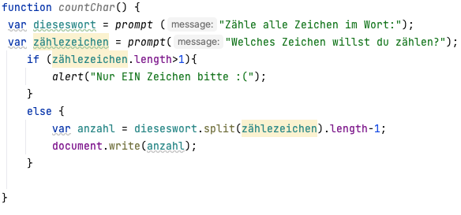
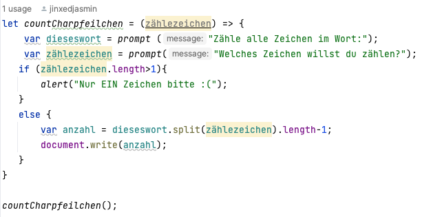

PORTFOLIO
How to: JavaScript
Skriptsprachen
- Programmiersprachen, die über einen Interpreter ausgeführt werden
- Scripting: Zusammensetzung von Kommandos für kleine Aufgaben
- Anforderungen: bei kleinen Aufgaben -> ohne komplexe Algorithmen/Datenstrukturen
Verknüpfungen
fehlende Überprüfungsmöglichkeit von Tippfehlern in Variablennamen
einfache Handhabbarkeit
- Konsequenzen: Einfache Sprachen (wenige Regeln/Konstrukte)
Dynamische Typprüfung
- Bsp.: JavaScript
Erweitert HTML -> dynamisches HTML
Im Browser interpretiert
JavaScript kann in HTML eingebunden werden, entweder als externe Datei und mit dem Aufrufen dieser oder durch script-Tags im HTML Code. Wenn mehrere HTML Dokumente den gleichen JavaScript Code nutzen sollen, empfielt es sich, die Datei auszulagern und in den Code in eine externen .js Datei zu packen. Persönlich nutze ich als Editor für JavaScript (und HTML) Virtual Studio Code, denn Tags und Befehle werden mir hier leicht aufgezeigt und empfohlen.
Im JavaScript Code sollte der Befehl "use strict"; ganz am Anfang genutzt werden, um die Ausführung des Programms zu wählen, die neuer ist, moderne Strukturen unterstützt und fehlerhafte Stellen beseitigt.
Durch den alert Befehl in JavaScript wird ein Pop-Up im Browser geöffnet, dass die Alert Nachricht ausgibt.
Durch einen prompt Befehl wird der Nutzer aufgefordert, etwas einzugeben, wie z.B. seinen Namen, sein Alter etc. Diese Information kann auch gespeichert und wiedergeben werden.
Kontrollausgaben beim Entwickeln
Durch verschiedene Ausgaben, wie z.B. durch den console.log Befehl, wird auf der Konsole des Browsers etwas ausgegeben. Es gibt verschiedenste Methoden des console Objekts, wie man in Befehle sehen kann.Typisierung, Variablen und Operatoren
Die Anzahl von Typen (von Variablen, Parametern und Objekteigenschaften) ist gering, da JavaScript vollständig dynamisch typisiert ist. Es ist daher nicht möglich, für eine Variable einen Typen anzugeben. Es gibt bool, number (Float, Integer), String, Objekte als Datentypen in js. Auch bereits definierte Variablen können jeden Datentyp speichern. Aus number a kann später String a werden. Variablen können durch let, var und const definiert werden. Let für Zugriff nur im Bereich {}, var für lokalen/globalen Zugriff und const für Konstanten. JavaScript unterscheidet außerdem nicht zwischen Ganzzahlen und Fließkommazahlen. Durch ein + zwischen Strings verkettet werden, durch ${} wird der Klammerinhalt berechnet. Berechnungen funktionieren analog zu denen in Java wie z.B. var a = 1*2; .Verzweigungen und Schleifen
Beide funktionieren genauso wie in java. Es gibt if/else und switch Verzweigungen und Schleifen wie for. Hier mal ein Beispiel für eine for Schleife:
Funktionen
JavaScript Funktionen sind gleichzustellen mit Methoden in Java. Man definiert sie, um den gleichen Code mehrmals zu verwenden indem man ihn aufruft. Funktionen können zum Beispiel so aussehen:
function meineFunktion(){
alert("Juhu! Meiner erste Funktion!");
}

Die Funktion kann dann in HTML aufgerufen werden und auch in einen Button gepackt werden und wird dann immer aufgerufen, wenn der Button geklickt wird. Es müssen hier nicht umbedingt alle Parameter definiert werden.
Es gibt auch vordefinierte Funktionen:
- parseInt() konvertiert einen String (z.B. 12) in ein Int.
- parseFloat() ist wie parseInt nur für Kommazahlen (müssen aber mit . getrennt werden)
- eval() interpretiert einen String
Außerdem gibt es Pfeilfunktionen, wie zum Beispiel:
